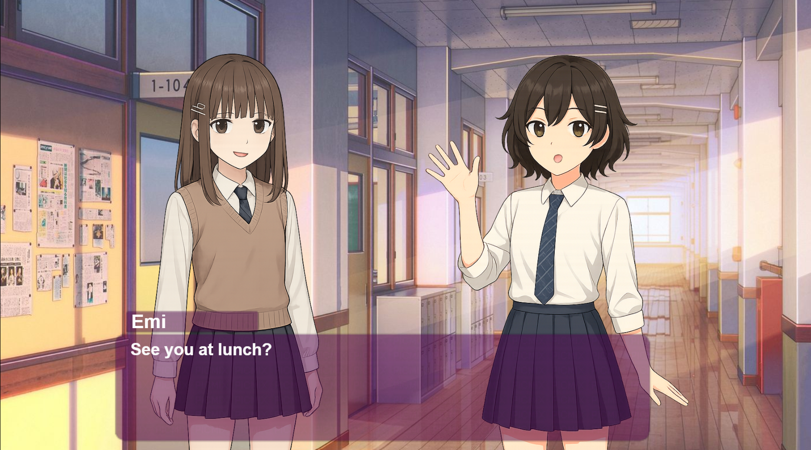
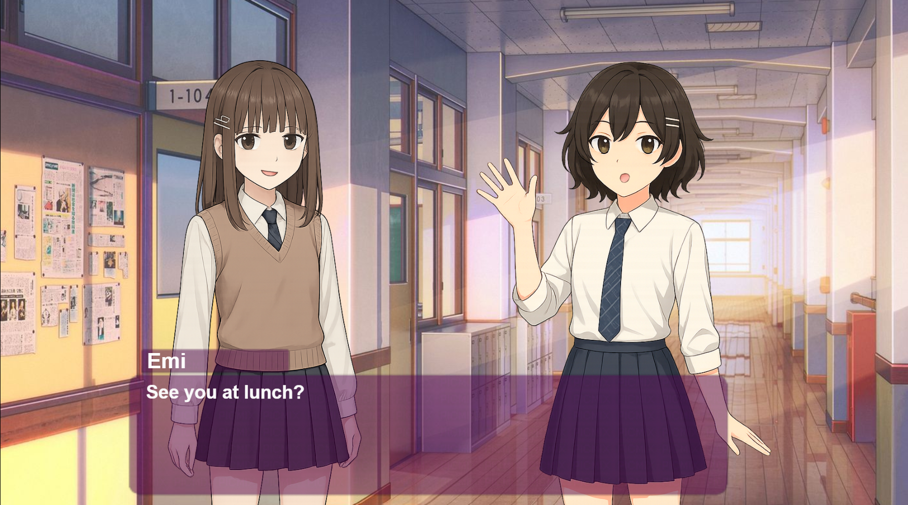

NADA NUSANTARA : BALI (2024)
RPG - Puzzle - Balinese
"Nada Nusantara: Bali" adalah sebuah game petualangan edukatif yang mengajak pemain menjelajahi keindahan desa dan alam Bali untuk menemukan serta mengumpulkan 10 alat musik tradisional yang tersembunyi.
Dalam perjalanannya, pemain akan bertemu berbagai NPC yang memberikan teka-teki, informasi budaya, dan cerita lokal yang memperkaya pengalaman bermain. Selain misi utama, pemain juga dapat menemukan berbagai benda khas Bali seperti canang sari, penjor, dan gebogan sebagai item sampingan. Game ini dirancang untuk mengenalkan serta menumbuhkan rasa cinta terhadap budaya dan kearifan lokal Bali, khususnya dalam pelestarian alat musik tradisional dan tradisi masyarakat.
Poland CAN INTO SPACE! (2025)
Platformer - CountryBall
POLAND Can into SPACE!" adalah game platformer 2D pixel, di mana kamu bermain sebagai PolandBall yang nekat ingin membuktikan bahwa Poland bisa ke luar angkasa! Tapi jalannya tidak mudah. Dari bos Soviet yang super kuat, negara-negara besar yang iri, hingga tetangga-tetangga rese yang siap menghalangi dengan senjata aneh, seperti Rusia yang melempar botol vodka dan Italia yang menyerang pakai pemotong pizza.
Jelajahi level-level unik bertema negara, hindari serangan absurd seperti gelas bir dan rudal, dan hadapi aliansi negara-negara elit luar angkasa di markas rahasia mereka.
Bloxy Adventure (2021)
RPG - OpenWorld
Bloxy adventure adalah game RPG Open world dimana kita menjelajah, mengalahkan musuh dan boss, lalu meningkatkan senjata dan armor yang kita miliki. Sebagai game open world, Bloxy adventure memiliki map yang lumayan luas, dengan medan dan jenis musuh yang berbeda beda, serta puluhan jenis senjata, resource dan armor yang bisa kita dapatkan.
Game ini terinspirasi dari game game RPG Open world ternama yang sudah terkenal pada masa itu, seperti Genshin Impact
Pembuatan projek ini adalah bagian dari proses saya belajar Roblox Studio, Dalam pembuatan game ini saya masih banyak menggunakan dan memodifikasi kode dan model model developer lain. Game ini adalah satu dari ratusan game roblox yang saya kembangkan di masa lockdown Covid 19
OMORI - Basil Pov (2024)
Horror - Psikologis
Game ini mengandung unsur depresi dan bunuh diri.
Omori adalah game RPG psikologis yang mengikuti perjalanan seorang anak pendiam bernama Sunny yang menghadapi trauma masa lalunya. Di dunia nyata, Sunny adalah remaja yang tertutup dan penuh rasa bersalah, sementara di dunia mimpi bernama Headspace, ia menjadi sosok pemberani bernama Omori. Bersama teman-temannya, Omori menjelajahi dunia aneh dan penuh warna, yang perlahan-lahan menunjukkan simbolisme dari emosi dan kenangan tersembunyi Sunny. Seiring cerita berjalan, pemain mengungkap rahasia kelam tentang kematian sahabat mereka, Mari, dan kenyataan pahit di balik peristiwa tersebut. Game ini menggambarkan tema kesehatan mental, pelarian dari kenyataan, dan pentingnya menghadapi rasa bersalah untuk bisa sembuh.
OMORI - Basil Pov adalah fanmade dari game bertemakan horror psikologis ternama bernama OMORI. game ini adalah versi dimana kita memainkan karakter lain dari game OMORI, yang memungkinkan kita untuk melihat cerita game ini dari sisi pandang yang berbeda. di game ini kita bermain sebagai Basil, salah satu side character paling berpengaruh di OMORI.
A Canvas For Two (2025)
VisualNovel - Drama - SliceOfLife
Game visual novel slice-of-life, tentang seorang cowok SMA yang juga merupakan seorang violinis, namun memiliki kehidupan yang kelam dan merasa tertekan karena tuntutan dari keluarganya. Selama menjalani kehidupan sekolah, dia bertemu Emi, seorang seniman ceria, serta karakter karakter lain yang akan mengisi cerita.
Cerita dari game ini membahas tentang persahabatan, penyembuhan emosional, dan perbedaan antara kebahagiaan di luar dan luka di dalam.Game ini sangat berfokus pada pilihan dan dialog bercabang. Keputusan yang diambil pemain tidak hanya memengaruhi hubungan sang tokoh utama dengan Emi dan lainnya, tetapi juga menentukan bagaimana ia menghadapi atau justru menghindari masa lalunya. Salah satu tema utama dalam cerita ini adalah kontras antara penampilan luar seseorang dan perasaan yang sebenarnya mereka simpan di dalam
Meski Tragisnya akhir dari ceritanya, permainan ini tetap menghadirkan nuansa bittersweet, campuran antara kepedihan dan harapan. Tujuan utamanya adalah menunjukkan bahwa di balik rasa sakit dan kehilangan, selalu ada ruang untuk penyembuhan dan pertumbuhan.
 

Konsultan Visa Virtual Office (2024)
VirtualOffice
Konsultan Visa Virtual Office adalah sebuah permainan di Roblox yang bertujuan untuk mempromosikan perusahaan terutama pada audiens muda. serta untuk membuat sebuah virtual office yang merupakan sebuah langkah kecil untuk memasuki era metaverse, seperti yang sudah dilakukan perusahaan besar lainnya seperti IKEA.
Game ini berisi replika persis kantor utama Konsultan visa. Saya mengembangkan sebagian besar dari game ini sendiri, dengan bantuan staff" Konsultan visa untuk memberi resource and informasi tentang kantor tersebut. Game ini sempat di promosikan lewat akun instagram official Konsultan Visa, serta dipromosikan di stand konsultan visa di acara jobdesk SMK Negeri 1 Denpasar
Konsultan Visa adalah perusahaan yang berbasis di Denpasar, Bali, yang menyediakan layanan profesional dalam pengurusan berbagai jenis visa untuk keperluan studi, kunjungan, magang, kerja, liburan, dan lainnya ke berbagai negara. Perusahaan ini berkomitmen untuk mendengarkan kebutuhan klien, memberikan solusi yang tepat, dan membantu dalam proses aplikasi visa yang sesuai dengan tujuan masing-masing individu.